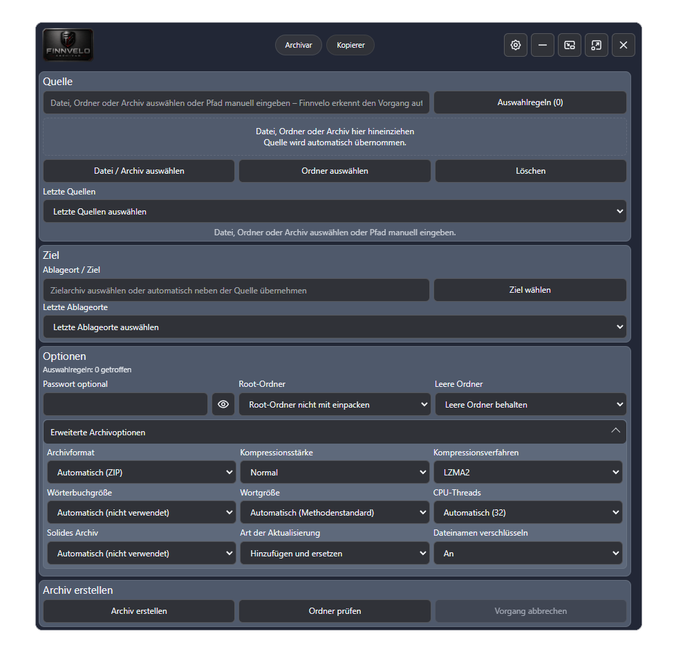
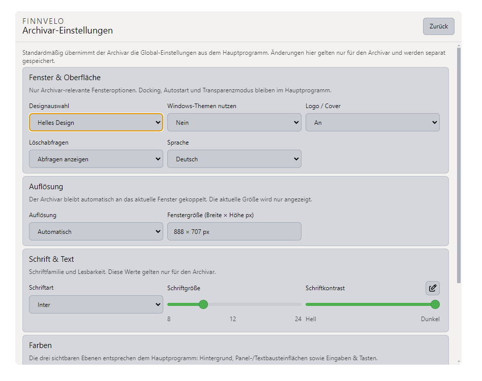
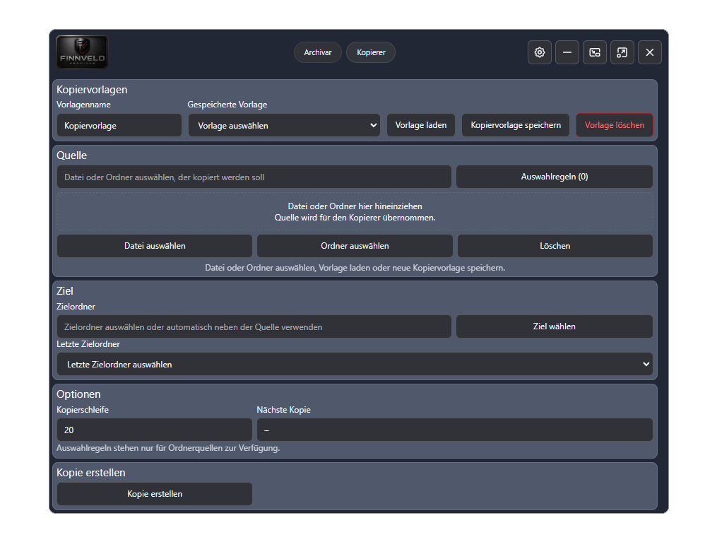
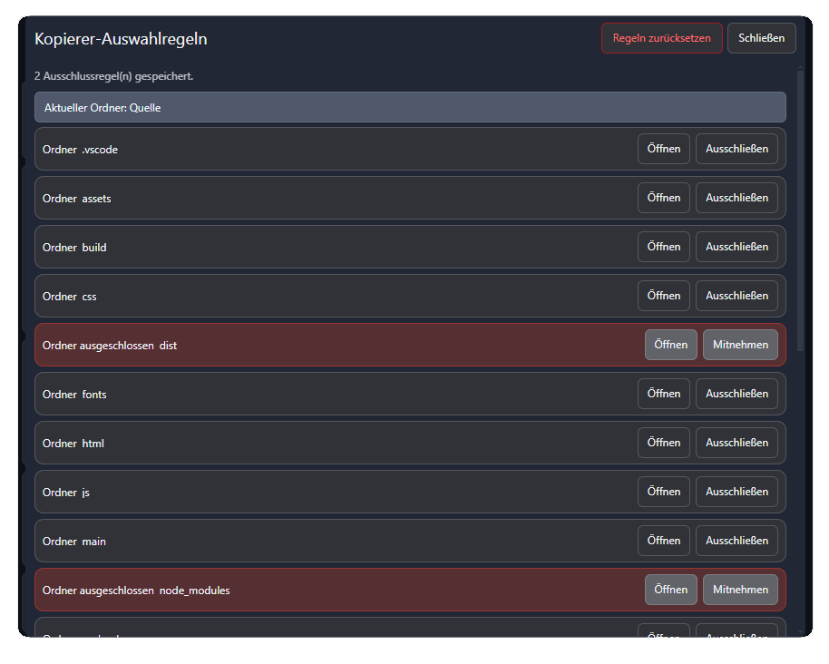

Archivieren · Entpacken · Kopieren
Finnvelo Archivar
Finnvelo Archivar ist ein modernes Windows-Programm zum Archivieren, Entpacken und strukturierten Kopieren von Dateien und Ordnern. Es verbindet klassische Archivfunktionen mit einer intelligenten Kopierfunktion für Sicherungen, Projektstände und wiederkehrende Dateiabläufe.
Beschreibung
Das Programm richtet sich an Nutzer, die Dateien sichern, Ordnerstände vervielfältigen oder wiederkehrende Dateiabläufe schnell und kontrolliert ausführen möchten. Dateien und Ordner können über die Programmoberfläche oder direkt aus dem Windows-Kontextmenü an den Finnvelo Archivar übergeben werden.
Die Oberfläche ist klar aufgebaut, unterstützt helles und dunkles Design und bietet eine mehrsprachige Bedienung. Archivierungs- und Kopiervorgänge werden mit Fortschritt, Datenmenge und Status angezeigt und können bei Bedarf abgebrochen werden.
Archivieren und Entpacken
Dateien und Ordner lassen sich komfortabel zu Archiven zusammenfassen oder aus vorhandenen Archiven entpacken - inklusive Fortschrittsanzeige, optionalem Passwortschutz und Abbruchfunktion.
Auswahlregeln
Bei Ordnerquellen kann festgelegt werden, welche Dateien oder Unterordner ausgeschlossen werden. Dadurch entstehen Archive gezielt nach den gewünschten Regeln.
Integrierter Kopierer
Wiederkehrende Kopierabläufe können als Kopiervorlage gespeichert werden - mit Quelle, Zielordner, Kopienanzahl, Auswahlregeln und aktuellem Kopierstand.
Automatische Kopierschleife
Der Archivar erkennt vorhandene Kopien und erstellt automatisch die nächste passende Kopie, ohne bestehende Kopien versehentlich zu überschreiben.
Windows-Integration
Dateien und Ordner lassen sich per Rechtsklick an das Programm übergeben. Die ausgewählte Quelle wird automatisch übernommen und der gewünschte Vorgang vorbereitet.
Mehrsprachige Oberfläche
Die Bedienung ist für mehrere Sprachen vorbereitet, darunter Deutsch, Englisch, Französisch, Spanisch, Italienisch, Niederländisch, Polnisch, Tschechisch, Dänisch und Türkisch.
Oberfläche
Die folgenden Ansichten zeigen den Finnvelo Archivar im Einsatz: Hauptansicht, helles Design, Kopiervorlagen und Auswahlregeln für präzise Datei- und Ordnerinhalte.




Tutorial-Video
Im Tutorial siehst du den Finnvelo Archivar direkt in der Anwendung: Oberfläche, Archivieren, Kopieren und wichtige Programmfunktionen im Überblick.
Besondere Vorteile
- Eigenständiges Windows-Programm für Archivierung und Dateiabläufe
- Integrierter Kopierer für wiederkehrende Kopierprozesse
- Speicherbare Kopiervorlagen mit automatischer Kopierschleife
- Auswahlregeln für Dateien und Unterordner
- Optionaler Passwortschutz beim Archivieren
- Fortschrittsanzeige mit Prozent- und MB-Anzeige
- Direkte Windows-Kontextmenü-Integration
- Helles und dunkles Design
- Updatefähiger Installer für spätere Versionen
- Kein unnötiger Autostart
Zielgruppe
Finnvelo Archivar eignet sich für Nutzer, die regelmäßig Projektordner sichern, Arbeitsstände archivieren, Dateien strukturiert kopieren oder wiederkehrende Datei- und Sicherungsprozesse effizienter gestalten möchten.
Besonders hilfreich ist das Programm für Projektarbeit, strukturierte Dateiablagen, Backup-Vorbereitung, Medienordner, Vorlagenordner und wiederkehrende Arbeitsprozesse.
Download
Hauptdatei
Finnvelo Archivar Setup 1.0.1 · Windows-Installationsdatei.
Letztes Update: 02.06.2026, 18:00 Uhr
Download startenWeitere Versionen und Patches
Hier können später weitere Versionen, Patchdateien und ältere Installationsdateien ergänzt werden.